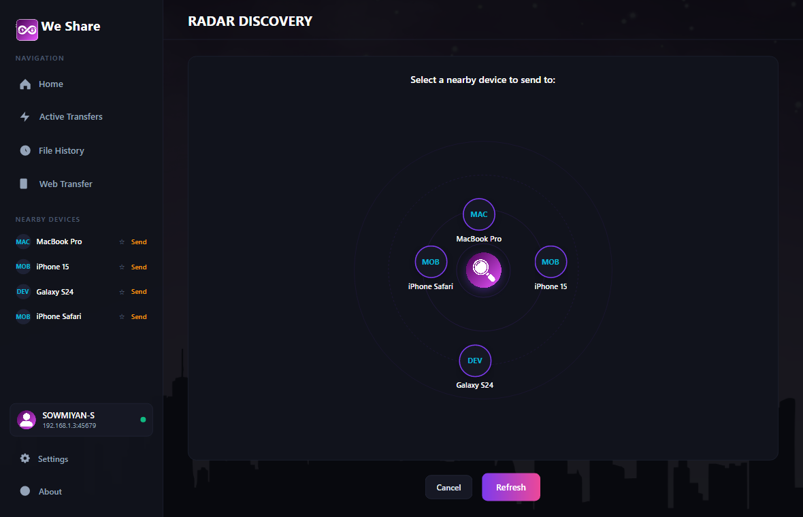

Clear, straightforward answers about how We Share works, how to share with phones, and why it's faster and more private than the cloud.

RADAR PEER SCANNINGVER 1.1.0
General Questions
We Share is a free, easy-to-use desktop application for Windows that lets you send files, photos, videos, and full folders directly between nearby computers and smartphones. Everything moves directly through the air in your room, so it is super-fast and does not use any internet data.
Yes! We Share is completely free and open-source under the MIT license. There are no subscriptions, no ads, no premium locked features, and no trial limits.
No. We Share uses 0 MB of your internet data plan. It sends files directly through your local Wi-Fi router. Even if your internet connection is down, or if you are in an area with no internet at all, the app continues to work normally.
No. You never have to sign up, enter an email, or create a password. You just open the app and start sharing immediately.
Phones & Other Devices
Yes! The best part is that your phone does not need any app installed. Just open your phone's regular camera and point it at the QR code on your computer screen. A private webpage will open on your phone where you can download the files straight into your Photos or Files app.
Yes. After scanning the QR code with your phone camera, tap the Upload button on the webpage. Select whatever photos or videos you want to copy over, and they will arrive directly in your computer's Downloads folder in seconds.
None at all. Whether you are sending a 5 MB PDF, a 10 GB 4K movie, or a 60 GB video game folder, We Share handles it with no file size limits and zero compression.
Privacy & Safety
100% private. Unlike cloud storage providers (Google Drive, Dropbox, iCloud) where files are uploaded to external company servers, We Share moves your files directly between devices in your room. Your personal photos and documents never touch the internet.
Never. Whenever anyone attempts to send you files, a clear prompt appears on your screen displaying their device name, the list of files, and the total size. Nothing is ever saved to your disk until you click Accept.
Because We Share connects computers directly across your home Wi-Fi rather than routing through the internet, Windows asks for permission to allow nearby devices on your network to communicate with the app. This is completely standard and safe for local sharing software.
Practical Scenarios
We Share includes an automatic offline mode. If you are on an airplane flight, in a car, or during a stormy home power outage, We Share automatically creates a direct wireless link between your laptops so you can continue sharing at full speed without needing a router or internet link.
Extremely fast. Because files move directly between your devices over your local connection instead of uploading to slow internet servers, a 2 GB video often transfers in just a few seconds.